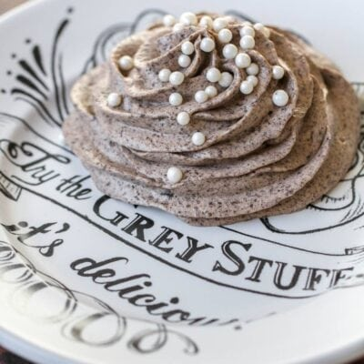

The Grey Stuff

Description
"Try the grey stuff, it’s delicious – don’t believe me? Ask the dishes!" Recreation of the "Grey Stuff" desert from Disney World's "Be Our Guest" restaurant.
Ingredients
- 3.4 oz vanilla pudding mix
- 1 1/2 cups milk
- 15 Oreos
- 8 oz cool whip
- 2 tbsp chocolate pudding mix
- Sprinkles
Steps
- In a medium bowl, combine pudding mix and milk. Whisk well and refrigerate for 10 minutes.
- Place Oreos in a food processor and blend until they become crumbs.
- Mix the crushed Oreos in with the pudding mixture and mix well.
- Fold in Cool Whip and chocolate pudding mix until well combined and refrigerate for one hour before serving.
- When ready to serve, place "grey stuff" in a piping bag and add a dollop to the middle and then pipe a spiral around it. Top with sprinkles. Enjoy!